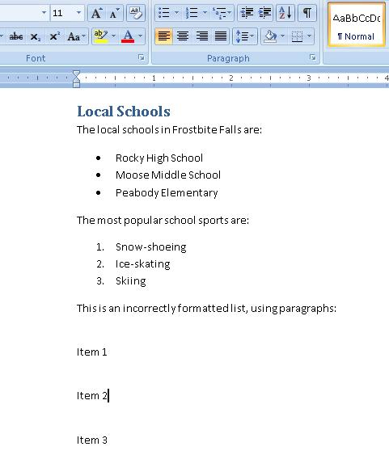
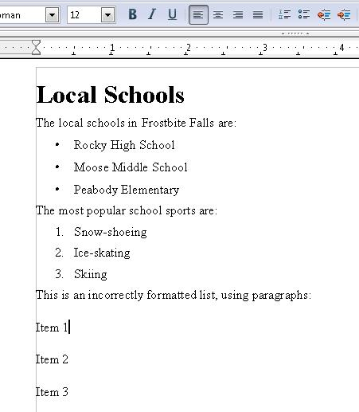
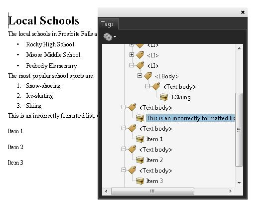
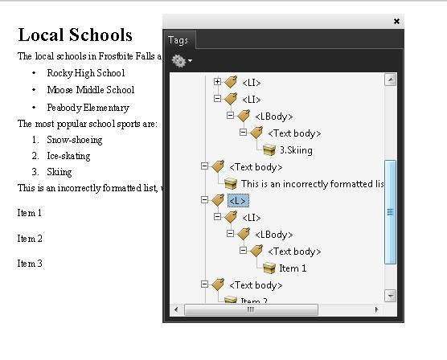

Tagged PDF documents with lists.
This technique relates to:
See PDF Technology Notes for information on user agent and assistive technology support.
The intent of this technique is to create lists of related items using list elements appropriate for their purposes. PDF files containing lists are normally created or repaired using a tool for authoring PDF.
When markup is used that visually formats items as a list but does not indicate the list relationship, users may have difficulty navigating the information. An example of such visual formatting is simply using line-breaks to separate list items.
Some assistive technologies allow users to navigate from list to list or item to item. If the lists are not correctly formatted with list tags, these users will have difficulty understanding the list content.
The easiest way to create lists in PDF content is to format them properly using list markup in the authoring tool, for example, Microsoft Word or OpenOffice.org Writer. However, if you do not have access to the source file and authoring tool, you can use Acrobat Pro's TouchUp Reading Order tool and the Tags panel.
The PDF specification defines list structure in section 14.8.4.3.3 (List Elements). The structure types for lists in PDF documents are:
This example is shown with Microsoft Word. There are other software tools that perform similar functions. See the list of other software tools in PDF Authoring Tools that Provide Accessibility Support.
On the Home ribbon, use the lists tools to create or repair lists in Word documents. This is the easiest way to ensure that lists are formatted correctly when they are converted to PDF.
In the image below, the numbered and bullet lists were created using the list tools. The third list did not use the list tool (see the ribbon) and the list will not be tagged as list elements when converted to PDF.

This example is shown with OpenOffice.org Writer. There are other software tools that perform similar functions. See the list of other software tools in PDF Authoring Tools that Provide Accessibility Support.
Use the Bullets and Numbering tool to create or repair lists in OpenOffice.org Writer documents. This is the easiest way to ensure that lists are formatted correctly when they are converted to PDF.
In the image below, the numbered and bullet lists were created using the list tools. The third list did not use the list tool (see the toolbar) and the list will not be tagged as list elements when converted to PDF.

This example is shown in operation in the working example of adding lists to OpenOffice Writer documents.
This example is shown with Adobe Acrobat Pro. There are other software tools that perform similar functions. See the list of other software tools in PDF Authoring Tools that Provide Accessibility Support.
In the following image, the third list is formatted as text. The list items are separated only by line-breaks. Assistive technology may not be able to render the list intelligibly for users.

To repair the list, use the Tags panel to create list tags in thecontent.
The following image shows the resulting first list item correctly formatted.

This example is shown in operation in the working example of ensuring lists are properly formatted in Acrobat Pro.
The following code fragment illustrates code that is typical marking up a list hierarchy in PDF documents. It uses the simple numbered list in the previous examples. This is typically accomplished by an authoring tool.
4 0 obj
<</Type /Page
/Contents 5 0 R
>>
endobj
5 0 obj
<< /Length 3 0 R >>
stream
/P <</MCID 1>> BDC
BT T* (The most popular sports are:) Tj ET EMC
/Lbl <</MCID 11>> BDC
BT T* (1. ) Tj ET EMC
/LBody <</MCID 12>> /BDC
BT (Snow-shoeing ) Tj ET EMC
/Lbl <</MCID 21>> BDC
BT T* (2. ) Tj ET EMC
/LBody <</MCID 22>> /BDC
BT (Ice-skating ) Tj ET EMC
/Lbl <</MCID 31>> BDC
BT T* (3. ) Tj ET EMC
/LBody <</MCID 32>> /BDC
BT (Skiing ) Tj ET EMC
endstream
endobj
101 0 obj % Structure element for intro paragraph to list ("The most popular sports are:")
<< /Type /StructElem
/S /P
/P 201 0 R
/Pg 4 0 R
/K 1
>>
endobj
111 0 obj % Structure element for first item, list label (Lbl): "1."
<< /Type /StructElem
/S /Lbl
/P 211 0 R
/Pg 4 0 R
/K 11
>>
endobj
112 0 obj
<< /Type /StructElem % Structure element for first item, list text (LBody): ("Snow-shoeing")
/S /LBody
/P 211 0 R
/Pg 4 0 R
/K 12
>>
endobj
... [ objects 121-122 and 131-132, referencing MCIDs 21-22 and 31-32 are omitted in the interest of space. ]
201 0 obj
<< /Type /StructElem
/S /Caption % Intro paragraph
/P 400 0 R
/K [101 0 R]
>>
endobj
211 0 obj
<< /Type /StructElem
/S /LI % List item for "1. Snow-shoeing"
/P 400 0 R
/K [111 0 R 112 0 R]
>>
endobj
212 0 obj
<< /Type /StructElem
/S /LI % List item for "2. Ice-skating"
/P 301 0 R
/K [121 0 R 122 0 R]
>>
endobj
213 0 obj
<< /Type /StructElem
/S /LI % List item for "3. Skiing"
/P 301 0 R
/K [131 0 R 132 0 R]
>>
endobj
400 0 obj
<< /Type /StructElem
/S /L % Top-level structure element in the list hierarchy
/K [201 0 R 211 0 R 212 0 R 213 0 R]
>>
endobj
Resources are for information purposes only, no endorsement implied.